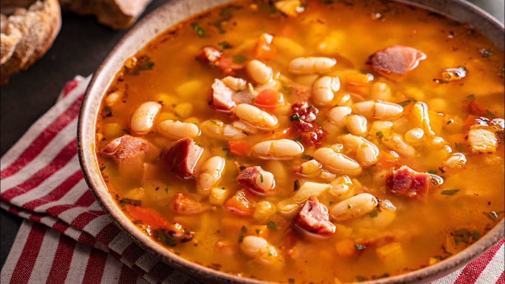

Fasole cu ciolan

In Romania we call it “Ciorba de fasole boabe cu ciolan afumat”.
The word “ciorba” is improperly translated soup but there is no other English word to describe it.
“Ciorba” is actually a slightly sour soup composed by vegetables and sometimes meat.
To understand how important “ciorba” is in Romania you must think at the cheese for the french or the tea for the english.
he recipe I’ve chosen is the one I found in the cookbook which is slightly different from the one my mother was doing.
Back home, my family was doing a hungarian type of bean soup which is not sour and it has a mix of wheat flour and oil that we call “rantas” (in France they call it roux).
I will try my family recipe when I’ll start an hungarian category. In the meantime let’s enjoy this romanian soup.
This bean soup it’s a romanian staple and I remember eating it since ever. There’s a saying in Maramures,
if you eat many beans during your childhood, you become a big and strong man.
I’m pretty sure my parents wanted me to become “the strongest man in the word”.
Ingredients:
- 800g red beans
- 1kg smoked pork knuckle
- 2 carrots
- 1 parsnip
- 2 onions
- 2 well ripened tomatoes
- 200ml tomato sauce
- 2 tbsp appple vinegar
- 1 tbsp sugar
- 5 tbsp of fresh taragon
- 4 springs of fresh thyme
- 1 tsp paprika
- salt to taste
Instructions:
- Put the pork knuckle in around 3 liters of cold water with the peppercorns, over medium heat and covered. Let simmer for an hour, skimming the foam every now and then.
- In the mean time, cut in small pieces the: onions, carrots, parsnip, celery and tomatoes.
- After one hour of simmering add the vegetables, the thyme, the paprika, the sugar and the vinegar. Let simmer for another hour. and keep skimming every now and then.
- After two hours of simmering, take the pork knuckle out of the soup and add instead the tomato sauce and the cooked beans. Let simmer for another 15 minutes.
- Chop the pork knuckle in small bits and throw them back in the pot.
- Chop the tarragon and the parsley and add to the pot when finished. Adjust the saltiness if needed.
- Serve with raw sliced onion and salt.